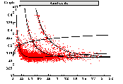
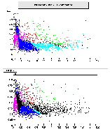
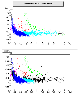
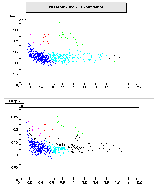
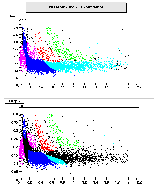
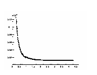
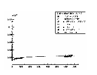
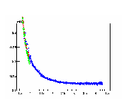
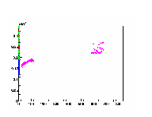

StPidAmpMaker
StPidAmpMaker - STAR Particle Identification vi Amplitute Approach
Please send questions to aihong@cnr.physics.kent.edu
The StPidAmpMaker is designed to be used with StuProbabilityPidAlgorithm, which is a functor in StEventUtilities.
The StPidAmpMaker loop through StEvents, and output a bunch of *.root files.
What those .root files contain are the parameters for describing the Bethe-Block curve, the statistic information for describing the amplitude and resolution's variation along p/z, which can be used to do the Particle Identification. Also this package generates parameters for calibration of de/dx vs p/z.
Richard Witt, who wrote the initial Fortran version of amplitude PID, has a nice page describing the algorithm. Click here to go to his page.
Currently we agree that PID depends on NHits, Pt, etc. Those dependences with their combinations make the infrastructure a little complicate.
So let's carify some important concepts in this package first.
StPidAmpNet
StPidAmpNet is a predefined "net" on the de/dx~p/z plane:(from now on I will use net refer to an instance of StPidAmpNet). Each particle type has a such net. All particles will be filled into those nets and build up statistic information by fitting.
StPidAmpChannel
A channel is made up by a set of nets (electron net, pion net...) which can only be filled by the tracks that satisfy the channel confinement. For example, we have a channel with confinement NHits between 10,15, Pt between 0,0.5 Gev. then only those tracks with NHits between 10-15 and Pt between 0-0.5 can be filled into nets in this channel. (from now on I will use channel refer to an instance of StPidAmpChannel)
StPidAmpChannelCollection
A ChannelCollection is made up of several channels. For example, channel NHits(0,10), NHits(10,20), NHits(20,45) build up a ChannelCollection.
A ChannelCollection is a complete ensemble of channels. A ChannelCollection itself can generate all the information for PID.
StPidAmpManager
The StPidAmpManager can hold multiple ChannelCollections. Thus if a user want compare results between two different ChannelCollections, all he needs to do is simply adding two ChannelCollections into StPidAmpManager.
StPidAmpMaker is a mediator between StEvent and StPidAmpManager. What ChannelCollection should be used to generate parameters is up to the user.
Know more about the Infrastructure...
The Bethe-Block curve based on the result of StPidAmpMaker:

Particle Identification result:
1.result from NHitsNetSet:
Channel Nhits 0-10

Channel Nhits 10-20

Channel Nhits 20-45

Combine All 3 channels

2. result from defaultNetSet:

BetheBlock curve fitting:
1. low beta*gamma region:

2. high beta*gamma region:

3. contribution due to different particle types:


1. How to run StPidAmpMaker?
Following is a piece of code showing how to run StPidAmpMaker:(I assume you drive it by doEvents.C)
void doEvents(Int_t nevents, const Char_t **fileList, const char *qaflag)
{
//
// First load some shared libraries we need
//
gSystem->Load("St_base");
gSystem->Load("StChain");
gSystem->Load("St_Tables");
gSystem->Load("StUtilities");
gSystem->Load("StIOMaker");
gSystem->Load("StarClassLibrary");
gSystem->Load("StEvent");
gSystem->Load("StMagF");
gSystem->Load("StEventMaker");
gSystem->Load("StPidAmpMaker");
chain = new StChain("StChain");
StFile *setFiles= new StFile();
for (int ifil=0; fileList[ifil]; ifil++)
{ setFiles->AddFile(fileList[ifil]);}
StIOMaker *IOMk = new StIOMaker("IO","r",setFiles,"bfcTree");
IOMk->SetBranch("runcoBranch",0,"r");
StEventMaker *readerMaker = new StEventMaker("events","title");
StPidAmpMaker *ampMaker = new StPidAmpMaker("pidAmp");
ampMaker->AddDefaultChannelCollection("BAR","BAR");//add a default StPidAmpChannelCollection(no PID dependence thus only 1 channel) to StPidAmpManager. Its fit option is "BAR", draw option is "BAR".
// ampMaker->SetNHitsFilter2LastCollection(5);//get rig of noise ( tracks with nhits<5 ) when fitting de/dx~beta*gamma.
// ampMaker->AddNHitsChannelCollection(0,10,20,45,"BAR","BAR");//add a nhits StPidAmpChannelCollection to StPidAmpManager. Here we have 3 channels in the collection, the corresponding nhits slices for each channel are 0-10,10-20,20-45.
//
// Initialize chain
//
Int_t iInit = chain->Init();
if (iInit) chain->Fatal(iInit,"on init");
chain->PrintInfo();
......
2. How to read out the parameters from "Bands.root" file and draw the Bethe-Block curve?
In your source code, the following lines of code will do the job. Later version will make it work at the command line.
in your header file
#include "TF1.h"
#include "TFile.h"
#include "TCanvas.h"
#include "StPidAmpMaker/Include/BetheBlock.hh"
#include "StPidAmpMaker/StPidAmpNetOut.h"
double ( *funcBandPointer) (double *, double *); //declare a funtion pointer.
in your source file
TFile f("nhitsBin_0_45_ptBin_0_Infinity_BGBands.root","READ","nhitsBin_0_45_ptBin_0_Infinity_BGBands.root"); //open a file produced by StPidAmpMaker.
StPidAmpNetOut* electronNetOut=(StPidAmpNetOut *)f.Get("e-"); //read in band parameters for electron band.
int NParameters=electronNetOut->GetNBandPars();
TF1* electronBandCenter =new TF1("electronBandCenter",funcBandPointer, 0,5, NParameters);
for ( int i=0; i electronBandCenter->SetParameter(i,(electronNetOut->GetBandParArray()).At(i)); //set parameters.
c1=new TCanvas("e- de/dx~p/z curve","e- de/dx~p/z curve",20,10,700,500);
c1->cd();
electronBandCenter->Draw("L");//done.
what if I want to draw a pure dedx~beta*gamma curve?
Just replace the line
StPidAmpNetOut* electronNetOut=(StPidAmpNetOut *)f.Get("e-");
by
StPidAmpNetOut* electronNetOut=(StPidAmpNetOut *)f.Get("betaGamma");
in the example above.
3. How to identify a track in StEvent?
In your macro, do not forget :
gSystem->Load("StEvent");
gSystem->Load("StEventUtilities");
and load some other libraries as well.
In your source code:
#include "StEventTypes.h"
#include "StuProbabilityPidAlgorithm.h"
//put the following line some where before your event loop:
StuProbabilityPidAlgorithm::readInputFile("nhitsBin_0_45_ptBin_0_Inf_Amp.root");//read in the parameters.
//inside your track loop:
StuProbabilityPidAlgorithm ampPid; //define a functor.
StParticleDefinition* def=theTrack->pidTraits(ampPid); //invoke functor.
if( def->name()=="e-" && ampPid.getProbability(0) > 0.9 )
printf("Got an electron at 90% confidence!\n");
if( def->name()=="pi-" && ampPid.getProbability(0) > 0.8 && ampPid.isExtrap()==1)
printf("got a pi- with 80% confidence, probability caculated based on the extrapolation\n");//an extrapolation is a resonable extend of the fitting from clear region to unclear region
Aihong Tang
Last modified: Thu Mar 9 10:01:57 EST 2000